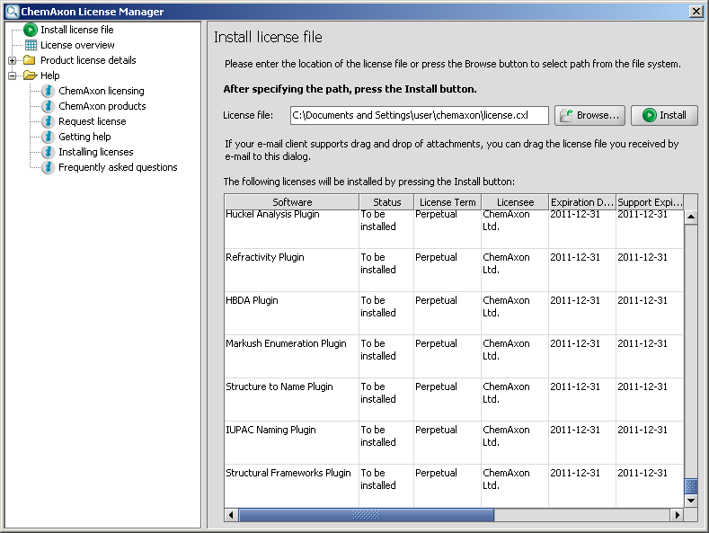

Installing Licenses to Desktops
The recommended method of installing licenses to desktops is through the
ChemAxon License Manager is a central place where you can manage the licenses of all ChemAxon products.
Three basic ways of launching:
- Choose "Licenses..." from the Help menu of any ChemAxon application.
- The Start menu on Windows: Start->Programs->ChemAxon contains several packages.
You can find the same CLM in any package.
- Launch using the
license shell script (Unix) or license.bat
batch file (Windows).
The CLM graphical user interface

Steps of installing the licenses
The licenses are usually stored in the license.cxl file
which you receive from ChemAxon.
You don't need to open or edit the content of this file, just simply
save it to an arbitrary location of your file system.
- Click on the Browse... button
- Select the location where you have saved your license.cxl file.
- Press the Install button
- Installing licenses is complete, you will see a license overview where you can see the installed licenses.
You can overview your licenses any time by selecting the "License overview" panel.
Other ways of installing the license:
- Using system variables:
The location of the license file can be set with:
chemaxon.license.url Java system property
Example: -Dchemaxon.license.url=C:\ChemAxon\license.cxl
CHEMAXON_LICENSE_URL environment variable
- Manual install:
The license.cxl file must be stored in the .chemaxon (Unix) or
chemaxon (Windows) sub-directory of the user's
home directory.
- Command line install:
Launch the license shell script (Unix) or license.bat
batch file (Windows).
Type license -h for the list of available options.
- Using API:
chemaxon.license.LicenseManager.setLicenseFile(String path)
License file location
The license file should either be at the default location or in case of a custom
location, the location should be configured to the license manager.
The default location is .chemaxon/license.cxl (Unix)
or chemaxon\license.cxl (Windows) under the user's home directory.
On Unix systems - including most distributions of Linux -
the home directory for each user takes the form /home/username
(where username is the name of the user account).
In newer versions of Microsoft Windows, based on the multi-user Windows NT,
each user has a home directory which by default is located at
C:\Documents and Settings\username when using the English language
version of the OS (with username again replaced by the particular
user's login name).
Notes
- The License Manager only installs licenses for the current user.
- To install license files for server-side applications please refer to
this guide.
- Read this documentation for installing license files issued
for versions prior to 5.0.